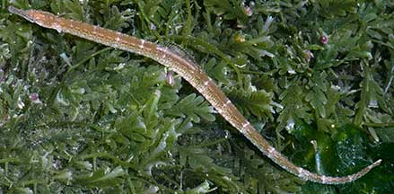
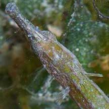
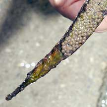
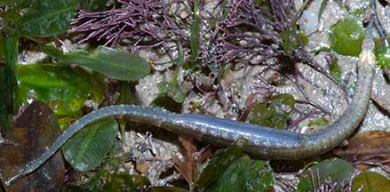

|
|
| fishes text index | photo index |
| Phylum Chordata > Subphylum Vertebrata > fishes > Family Syngnathidae |
| Pipefishes Family Syngnathidae updated Oct 2020
Where seen? A cousin of the more famous seahorse, these extremely well camouflaged fishes are often mistaken for roots and overlooked. Particularly as they often lie motionless among the seagrasses and seaweeds. Pipefishes are seen on many of our shores. In the North, they appear to be seasonally common. They are more often seen when it is dark. During the day, they remain well hidden. What are pipefishes? Pipefishes are true fish, although they don't appear very fish-like! Pipefishes belong to Family Syngnathidae which includes seahorses. Features: Bodies long, cylindrical and rather stiff being enclosed in an armour of bony rings just under the skin. They also have an internal skeleton just like other fish. Most retain a tiny dorsal fin and tiny pectoral fins and some have a tiny fan-like tail fin. Pipefishes lack scales. Gill openings are reduced to a pore. Some have prehensile tails. Pipefishes are adapted for sheltered waters well vegetated with seagrass or seaweed. With reduced fins and rather inflexible bodies, pipefishes cannot swim quickly. Instead, they rely on camouflage to blend in with the vegetation. Pipefishes come in a wide variety of colours and patterns. What do they eat? Pipefishes feed on tiny creatures. To suck these up, they use their long tube-like snouts tipped with a small toothless mouth. |
 Changi, Oct 07 |
 Long tube-like toothless snout. Tiny tubular nostrils. Tiny pelvic fins. Changi, Aug 14 |
| Pipefish babies: Like the seahorse,
the male pipefish also carries the eggs. In some species, the male
has a pouch on the underside of his tail. For those without a pouch,
the eggs are glued to the underside of the male's tail or abdomen.
Often the eggs are embedded in a spongy tissue. Some have a pair of
flaps that fold over the eggs. Females have an ovipositor to lay eggs
on the male's body, where the eggs are then fertilised. In some species,
'pregnant' males may hang out together in small groups. The eggs develop
safely on dad's body. The father 'gives birth' to live young, which
emerge as miniatures of the adults. Some pipefishes may perform courtship dances before mating. Unlike seahorses, a mating pair of pipefishes may not remain faithful only to one another. A female might lay her eggs on several males, and a male might carry the eggs of several females. |
 Carrying eggs on the underside Pulau Semakau, Jun 05 |
 Very pregnant papa with a bulging pouch on the underside. Changi, Apr 09 |
| Human uses: Pipefishes are used
in traditional Chinese medicine, often as a substitute for seahorses.
Some species are also caught for the live aquarium trade. Status and threats: See Family Syngnathidae for threats to pipefishes and seahorses. |
| Some Pipefishes on Singapore shores |
| Unidentified pipefishes |
On wildsingapore
flickr
|
| Pipefishes
recorded for Singapore from Wee Y.C. and Peter K. L. Ng. 1994. A First Look at Biodiversity in Singapore. *from Lim, Kelvin K. P. & Jeffrey K. Y. Low, 1998. A Guide to the Common Marine Fishes of Singapore. ^from WORMS +Other additions (Singapore Biodiversity Records, etc)
|
Links
References
|